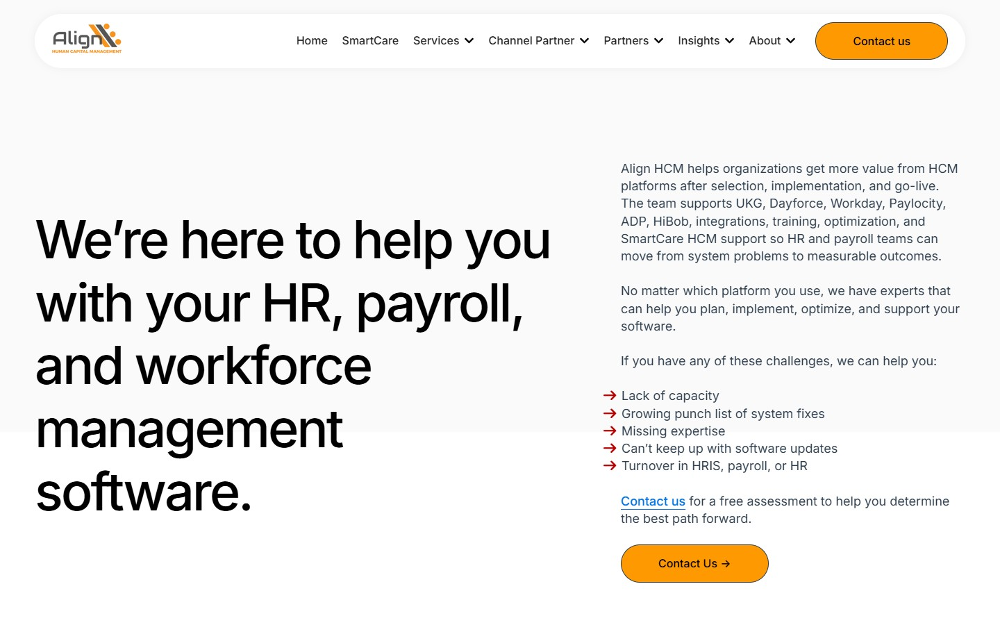
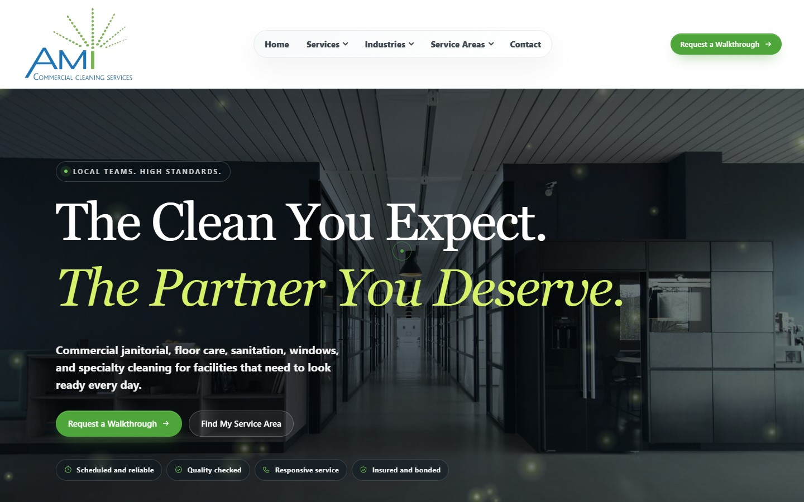
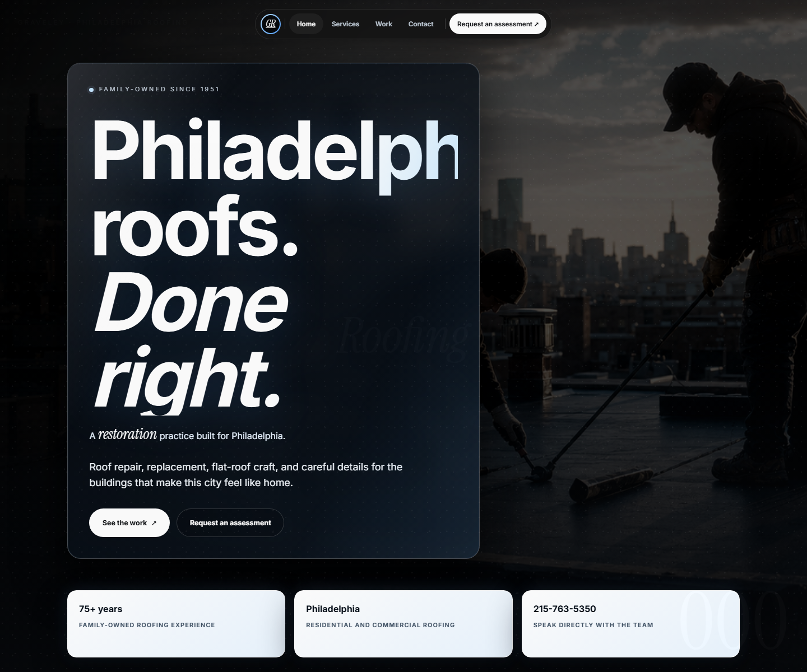
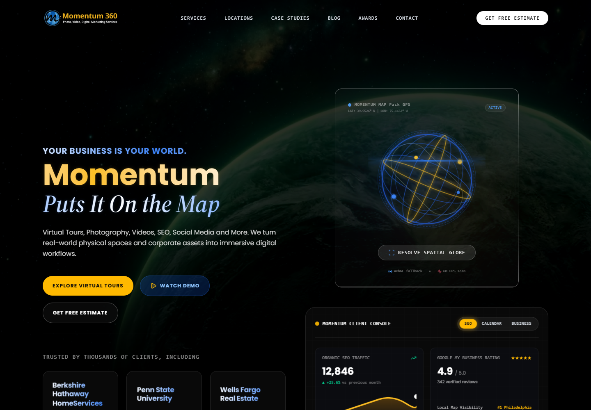

Align HCM · Organic
9 qualified leadsStrategy · design · analytics · automation
Connected growth.
Proven in the numbers.
What happens when a front end designer can also audit the stack, connect the data, find the revenue signal, and turn it into the next thing the team should build?
Align HCM · Revenue
$54K closed wonShadow · Meta
$14.40 cost per leadAMI · Search
1,833 impressions in 9 daysAggregate client results · source dates and measurement limits documented below
01 BigOrange now
The stack is already ready for a smarter operating layer.
BigOrange has the strategy, publishing footprint, and core technology. The immediate opportunity is to connect the evidence, tighten the technical edges, and make the reporting system as strong as the client work.
Live public audit · July 16
344 indexable URLs.
One connected content system.
The Yoast sitemap exposes 294 posts and 50 pages. That is enough depth to support serious topic clusters, comparison content, answer pages, and industry authority.
Open the live sitemap ↗344URLs
294 posts
50 pages
Integration signal
MCPWordPress adapter detected
The public REST index advertises an MCP namespace and default server route.
Live routeSearch intelligence
SESemrush hooks present
Yoast already exposes Semrush authentication and related keyphrase routes.
Ready to connectCrawler strategy
Discovery open.
Training controlled.
- Allowed OAI SearchBot · Perplexity · Semrush
- Blocked GPTBot · ClaudeBot · CCBot
First technical wins
- 01
Correct the homepage search description typo.
- 02
Reduce the AI service page from four H1 elements to one.
- 03
Connect qualified calls, proposals, forms, and CRM outcomes.

The people behind the system · Instagram · Jul 7
Scale the team without flattening the voice.
Your strategy stays human. My operating layer handles the repeatable work around it: gathering evidence, finding the opportunity, preparing the brief, drafting the asset, checking the implementation, and refreshing the report.
More client capacityFaster evidenceConsistent QAHuman approval
Open the original team post ↗
02 Real analytics
Not a fake dashboard.
Actual operating evidence.
Each case combines business outcomes with a fresh technical baseline. Sources, date ranges, and measurement gaps remain visible so the story stays credible.

VerifiedHubSpot attribution · Jul 15
01
Align HCM
From form volume to revenue evidence.
22qualified buyers
9organic qualified leads
5organic leads with deals
$54Korganic closed won
59%buyer follow up coverage
1verified ChatGPT referral
What the terminal found
Organic search was the strongest captured qualified demand channel in the audited cohort. The same audit surfaced follow up leakage without exposing a single lead identity here.
Fresh mobile lab baseline · Jul 16
Performance 47Accessibility 92SEO 100LCP 17.3s
02
Shadow Heating & Cooling
Paid media that can be tied to action.
4Meta leads
$14.40cost per lead
$57.60seven day spend
3,177impressions
1,693reach
1.88frequency
Paid mediaVerified
Meta results · Jul 13
Website trafficNot collected
No analytics tag detected
On-site forms2 registered
0 retained submissions
AttributionOpen gap
No GA4, GTM or Meta Pixel
What the terminal found
The latest verified seven day view showed controlled frequency and a positive lead cost. The live website has 14 sitemap URLs and two registered Netlify forms, but no visitor analytics or cross-channel attribution layer. That is the next install, not a number to invent.
Open Shadow reporting dashboard ↗Fresh mobile lab baseline · Jul 16
Performance 38Accessibility 96SEO 100LCP 10.0s

VerifiedMeta seven day view · Jul 13

Deep checkedGSC · GA4 · sitemap · Lighthouse
03
AMI Commercial Cleaning
A new search footprint with a measurable next move.
54search clicks
1,833search impressions
2.95%search CTR
12GA4 active users
14page views
1generate lead event
Search Console · Jul 2–10
Branded demand reached position 1. “Commercial cleaning services” produced 65 impressions at an average position of 14.35.
GA4 · Jul 3–12
The lead event fired, but key events remained at zero. The immediate win is marking generate_lead as a key event and validating the CRM handoff.
Fresh mobile lab baseline · Jul 16
Performance 40Accessibility 93SEO 100LCP 5.2s
Data boundary
All results are aggregate and sanitized. No names, emails, contact IDs, raw submissions, credentials, or private account links appear in this public showcase. Lab scores are single-run mobile Lighthouse baselines, not field Core Web Vitals.
+ Why this scales
One operating layer.
Two growth engines.
Scale the agency
More accounts can be understood, prioritized, and reported on without adding the same amount of manual research and production time.
Scale client growth
Every client gets a tighter loop from search demand to content, experience, conversion tracking, CRM outcomes, and the next best action.
03 The system
The terminal is the connective tissue.
It pulls evidence from the systems the team already uses, normalizes it, checks it, and turns it into a clear next action. The interface stays human. The process becomes much faster.
GA4Search ConsoleSemrushHubSpotMetaGoogle AdsWordPress
bigorange-growth-os
01 collect authenticated evidence
02 normalize dates, sources, conversions
03 verify tracking and attribution
04 surface the decision that matters
✓ reviewable output ready
Executive dashboardTechnical backlogContent planConversion briefClient report
WordPress × Semrush MCP
Research in. Reviewed drafts out.
Semrush can supply keywords, competitors, rankings, backlinks, site audits, and read only project data. WordPress can expose the existing page set, metadata, media, links, and draft surfaces.
OAuth firstRead only startRevocable accessHuman publish
SESemrush MCP
research⇄context
WBigOrange WordPress
inventorybriefdraftQA
SEO
Technical clarity, topic architecture, internal links, search demand, and conversion journeys.
AEO
Answer blocks, comparisons, definitions, FAQs, and evidence that can be extracted cleanly.
GEO
Entity consistency, authorship, original data, citations, local proof, and credible mentions.
CRO
Clear promises, measured actions, stronger forms, faster pages, and testable design decisions.
Real expertise in motion · Instagram · Jul 15
One conversation can become a complete client growth loop.
A team insight can become a transcript, keyword and entity map, answer page, social cutdown, email, sales asset, structured data, internal links, and a tracked conversion path. My role is to make that reuse fast, visible, and measurable.
DiscoverCreateDistributeMeasureImprove
Open the original Reel ↗
04 Selected work
Every screenshot.
Inside the frame.
Consistent browser captures make the design itself the focus. No accidental crops. No stretched mockups. Every project opens to the real live experience.

Warm B2C · Floral
Overhill Flowers
The flower direction · editorial warmth and an immediate shopping path.
Warm B2C · Food
Cindy May
Comfort, personality, and a clear commercial experience.
Local service · Roofing
Graveley Roofing
A dimensional Philadelphia service brand with confident type, local context, and a direct assessment path.
Public sector · UX
Public Sector
Complex service information organized into a confident guided path.B2B service · Live
AMI Commercial Cleaning
A search led regional experience with a measurable local footprint.Home service · Live
Shadow Heating & Cooling
A distinctive local brand built to turn paid attention into action.
Platform · Redesign
Momentum 360
“Put Your Business on the Map” translated into an immersive spatial brand and high energy conversion experience.05 First 90 days
Start useful.
Then make it repeatable.
Days 01–30
Instrument + understand
- Access and measurement map
- Technical and template baseline
- Conversion definitions
- First reporting layer
Days 31–60
Ship + connect
- High impact page improvements
- Semrush and WordPress pilot
- Answer focused content system
- Design component library
Days 61–90
Scale + prove
- Automated evidence refreshes
- Topic and authority expansion
- Conversion learning backlog
- Executive growth view
The opportunity
Back to the top↑
Beautiful work that gets smarter every week.
06 Sources + boundaries
Evidence before claims.
Public BigOrange inspection, sitemap evidence, and official Instagram post assets were captured July 16, 2026. Align aggregates come from a sanitized HubSpot lead and attribution audit generated July 15. Shadow results come from the verified seven day Meta view sent July 13. AMI Search Console covers July 2 through 10 and GA4 covers July 3 through 12. Fresh mobile Lighthouse lab runs were captured July 16.